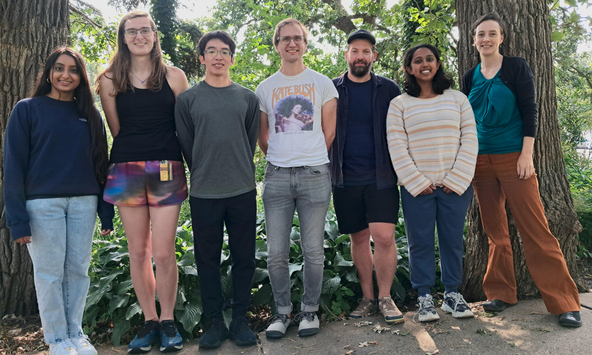
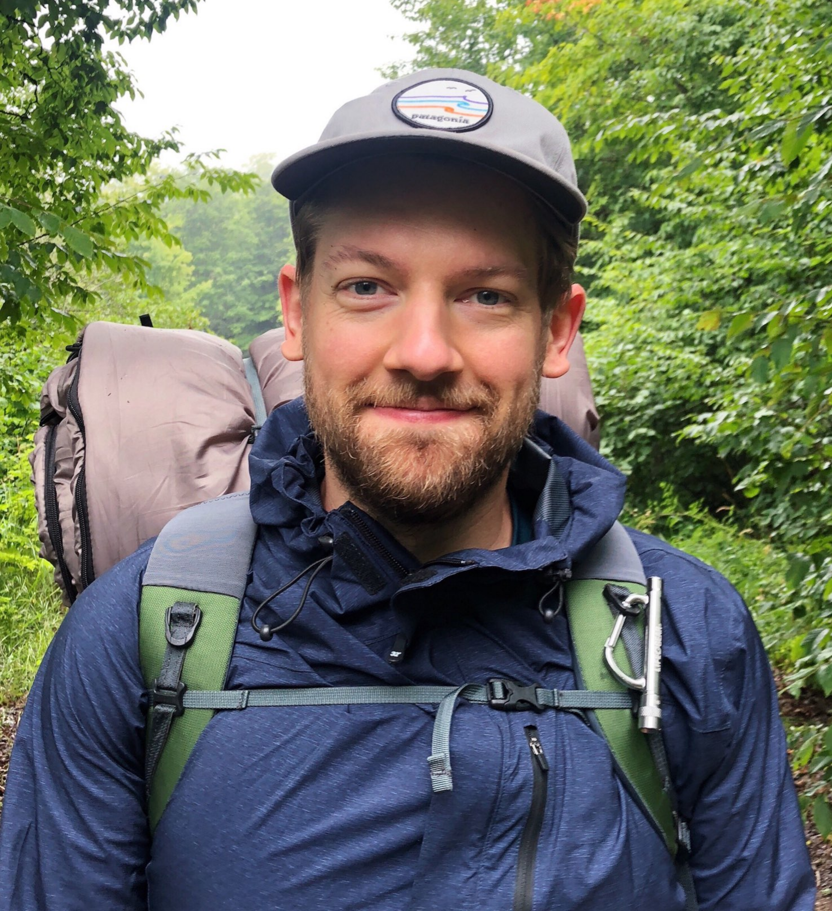
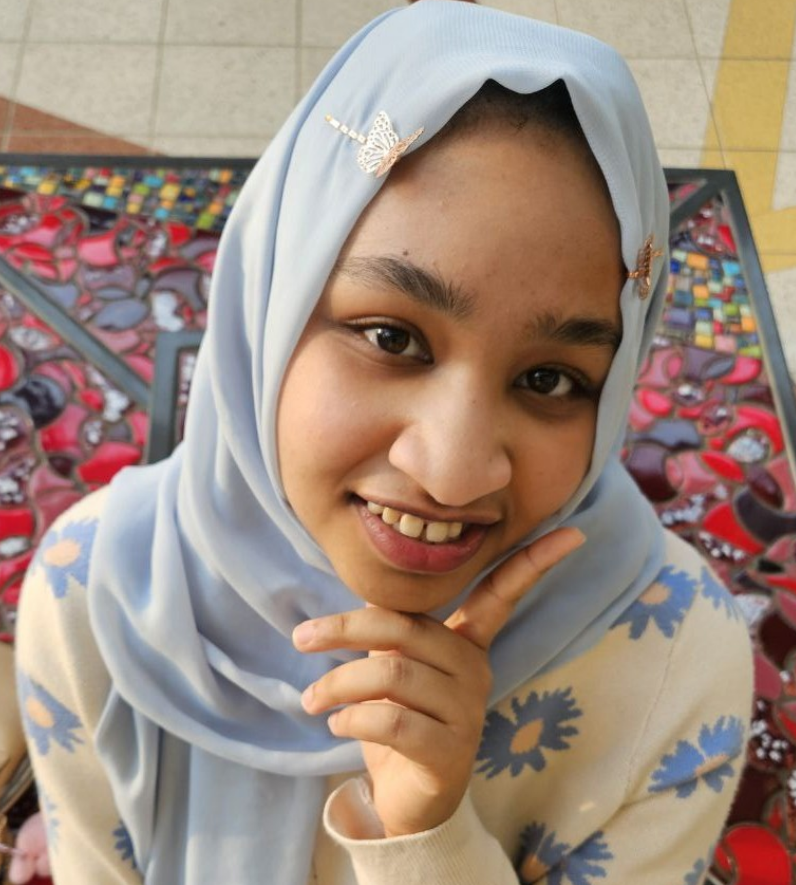
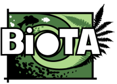

Shaw Lab Community
Shaw Lab Community Mission Statement
Ecological theory aims to clarify the links between mechanism and pattern in the natural world by using
conceptual and mathematical models. We leverage theoretical approaches to develop an understanding that
transcends particular empirical systems, which is especially valuable when answers rely on phenomena that
cannot be directly observed in nature. Tackling scientific questions in light of the global challenges we
face requires diverse perspectives; science needs all of us! We believe that anyone can do theory regardless
of mathematical background or skills. In our lab, we develop our own theory and we foster a broader community
that helps people do theory in their research. We also aim to
improve theory literacy through developing
frameworks, facilitating communication between empiricists and theorists, outreach,
and teaching.

Lab Members
Allison Shaw (Associate Professor, EEB)

My research uses math to understand the similarities -- and reconcile the differences -- across species.
In particular, I am fascinated by movement: a behavior found in all organisms that is often adaptable on
short time scales, and influences the ecology and evolution of populations. I am interested in the
factors that drive organisms to move, the consequences of movement, and feedback between these two.
Generally, I construct either analytic or simulation models, which are fantastic tools
for studying the interface between ecological and evolutionary processes.
[ CV-pdf]
[ Google Scholar]
[Math Genealogy Project]
Steph Varghese (2024+ Graduate Student, EEB)

I am interested in reconciling competing hypotheses of major evolutionary transitions. During my PhD, I hope to explore the role of facilitative interactions for driving novel advancements in biological organization. By combining mathematical modeling approaches in the Shaw Lab with experimental evolution of microbes in the Travisano Lab, I hope to contribute to greater clarity on how simple things gained incredible complexity over billions of years on earth.
Ching-Lin Huang (2024+ Graduate Student, EEB)
I am interested in using math to study how species interactions shape ecological communities. My particular focus is on interactions in which organisms modify environmental conditions and thereby indirectly influence other species. Using theoretical models, my work explores how this species environment feedback shapes biodiversity as well as the spatial and temporal patterns of ecological communities.
Peter Lutz (2024+ Graduate Student, EEB)

I am interested in using theoretical tools to understand how populations spread through changing environments. Previously, I have used simulations of dispersing species to investigate how their interactions can impact whether they are able to coexist across space. I hope to continue learning how to apply these approaches to questions related to population dynamics and biodiversity.
Yumna Yassin (2026, Undergraduate student, Neuroscience and Art)

During my stay in the Shaw lab I want to gain a new way of thinking through understanding theoretical modeling and its applications. I will be expanding on an existing species interactions model by adding an environmental factor. This model will be investigated through the relationship between jellyfish, small fish, and ocean acidification.
Honorary / Visiting lab members
We are lucky to currently have a number of 'friends of the lab' who often attend lab meetings and otherwise enrich our lab culture:
- Chris Wojan
- Aarcha Thadi
- Alyssa Gooding
- Inyoo Kim
- Raine MacArthur-Waltz
- Chau Pham
- Tyler Seidel
- Caleb Hill
- Anh Mai
Recent collaborators
- Sonia Altizer (Ecology, University of Georgia)
- Naneh Apkarian (Math, Arizona State University)
- Celina Baines (Ecology and Evolutionary Biology, University of Toronto)
- Sandra Binning (Biological Sciences, Université de Montréal)
- Pete Buston (Biology, Boston University)
- Meggan Craft (Ecology, Evolution & Behavior, University of Minnesota)
- Cassidy D'Aloia (University of Toronto)
- Richard Hall (Ecology, University of Georgia)
- Will Harcombe (Ecology, Evolution & Behavior, University of Minnesota)
- Frithjof Lutscher (University of Ottawa)
- Christopher Moore (Biology, Colby College)
- Taz Mueller (University of Minnesota)
- Stephanie Peacock (University of Calgary)
- Lea Popovic (Concordia University)
- Nitin Sekar (WWF India)
- Daniel Stanton (University of Minnesota)
- Maxime Vaugeois (University of Minnesota)
- Ya Yang (Plant and Microbial Biology, University of Minnesota)
- Marlene Zuk (Ecology, Evolution & Behavior, University of Minnesota)
- ESEB Special Topic Network on Dispersal and Mating Systems
Theory Group
In the past (from 2014-2022) our lab facilitated an informal theory and modeling lab group meeting, open to anyone in EEB, PMB and beyond. The aim was to create a forum for provid/aing feedback on ongoing modeling work...and to sometimes make theory-related desserts.
Biological Theory Alliance (BioTA)
We co-founded (in 2015) and were a member (until 2024) of the University of Minnesota's Biological Theory Alliance (BioTA), which aimed to bring together researchers who use conceptual and mathematical modeling to understand biology.
